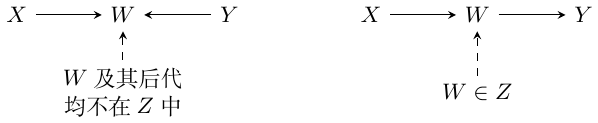

第 13 讲：结构方程建模
SEM 指结构方程模型。回顾前面的方程 \(Y_i=\alpha+W_i\tau+\varepsilon_i\)：设 \(W_i=w\)，则观测到 \(Y_i(W_i=w)=\alpha+w\tau+\varepsilon_i\)。
非参数 SEM
设 \((X_1,\ldots,X_p)\) 是 \(p\) 个随机变量，联合分布为 \(P\)。假设 \(P\) 可以用有向无环图（DAG）\(G\) 表示，即 \[P(X_1,\ldots,X_p)=\prod_{j=1}^p P(X_j\mid\operatorname{pa}_j),\tag{13.2}\] 其中 \(\operatorname{pa}_j\) 是图 \(G\) 中 \(X_j\) 的父节点集合。等价地， \[\operatorname{pa}_j=\{X_i:E_{ij}=1\},\] \(E_{ij}\) 表示是否存在边 \(X_i\to X_j\)。进一步假设存在确定性函数 \(f_j\)，\(j=1,\ldots,p\)，使得 \[X_j=f_j(\operatorname{pa}_j,\varepsilon_j),\qquad \varepsilon_j\sim F_j,\quad\text{相互独立}.\tag{13.3}\] SEM／DAG 用父节点和噪声来规定每个节点。
即使上游父节点的取值改变，\(f_j(\cdot)\) 也不改变。 \(\textcolor{red}{\longrightarrow}\) \(X_j=f_j(\operatorname{pa}_j,\varepsilon_j)\)
这样有了具体含义：\(f_j\) 可以看作给定父节点时 \(X_j\) 的分布索引。
因果查询从外部设置某些节点的取值，考察其他节点的分布怎样改变。对不相交的节点集 \(W,Y\subset X\)，把设置 \(W=w\) 对 \(Y\) 的影响写为 \[P[Y\mid\operatorname{do}(W=w)].\] 在 (13.3) 中，删除对应于 \(W\) 的方程，并将其他方程中的 \(W\) 替换为 \(w\)。对 \(X_j\) 的干预，对离散变量，截断分解为 \[P[X\mid\operatorname{do}(X_j=x_j)] =\begin{cases} \displaystyle\frac{P[X]}{P[X_j=x_j\mid\operatorname{pa}_j]},&X_j=x_j,\\ 0,&\text{其他情况}. \end{cases}\]
1? \(\textcolor{blue}{\longrightarrow}\) 分母 \(P[X_j=x_j\mid\operatorname{pa}_j]\)
被强制设置的节点在 \(x_j\) 处的新概率质量是 \(1\)。分母的作用是移除旧的观测机制，不能把这个分母换成 \(1\)。
Do-calculus：分离与图的修改
对互不相交的节点集 \(X,Y,Z\)，考虑一条连接 \(X\) 中某节点与 \(Y\) 中某节点的无向路径 \(p\)。若路径中存在节点 \(W\) 满足下列任一条件，路径就被 \(Z\) 阻断：
\(W\) 是路径 \(p\) 上的 collider，且 \(W\) 本身及其任何后代都不在 \(Z\) 中；或
\(W\) 不是路径 \(p\) 上的 collider，且 \(W\in Z\)。
两幅路径示意图如下（实线箭头是因果边；虚线箭头连接批注）：

当 \(Z\) 阻断两个节点集之间的每条路径时，才称它将二者 \(d\)-分离。
若 \(Z\) 将 \(X\) 和 \(Y\) \(d\)-分离，则 (13.2) 推出 \(X\perp Y\mid Z\)，记为 \[(X\perp Y\mid Z)_G.\] 图的记号：
\(G_{\overline X}\)：删除指向 \(X\) 的入边。
\(G_{\underline X}\)：删除从 \(X\) 出发的出边。
\(G_{\underline X\overline Z}\)：删除从 \(X\) 出发的边，以及指向 \(Z\) 的边。
三条规则
\(\operatorname{do}(X=x)\) 删除入边，所以在 \(X\) 上方加横线。对互不相交的节点集 \(X,Y,Z,W\)：
观测的插入／删除。若 \[(Y\perp Z\mid X,W)_{G_{\overline X}},\] 则 \[P[Y\mid\operatorname{do}(X=x),Z=z,W=w] =P[Y\mid\operatorname{do}(X=x),W=w].\]
干预与观测的交换。若 \[(Y\perp Z\mid X,W)_{G_{\overline X\underline Z}},\] 则 \[P[Y\mid\operatorname{do}(X=x),\operatorname{do}(Z=z),W=w] =P[Y\mid\operatorname{do}(X=x),Z=z,W=w].\]
干预的插入／删除。若 \[(Y\perp Z\mid X,W)_{G_{\overline X\overline{Z(W)}}},\] 其中 \(Z(W)\) 是 \(Z\) 中在 \(G_{\overline X}\) 内不属于任何 \(W\) 节点之祖先的那些节点，则 \[P[Y\mid\operatorname{do}(X=x),\operatorname{do}(Z=z),W=w] =P[Y\mid\operatorname{do}(X=x),W=w].\]
我的简记。
共同的 \(\operatorname{do}(X=x)\)，以及额外的上横线／下横线。 \(\textcolor{red}{\longrightarrow}\) 上面的三条 do-calculus 规则。
三个式中都有 \(\operatorname{do}(X=x)\)；\(\overline X\) 提供 \(\operatorname{do}(X=x)\) 条件。之后，在相应分离条件成立时，删掉 \(Z\) 的出边，就可以把“do \(Z\)”换成“control \(Z\)”；删掉 \(Z(W)\) 的入边，则“do \(Z\)”相当于没 do。\(Z(W)\) 是 \(Z\) 中不具有上述被排除的 \(W\) 祖先关系的部分。
反复使用 do-calculus，将因果查询化简为关于 \(P\) 的可观测查询：表达式中不再有 do 算子，只依赖观测到的随机变量。Do-calculus 是完备的：如果无法把某个因果查询化为这样的观测表达式，那么在给定的 SEM 框架下，该查询就不能非参数识别。
完备性说的是：在指定因果模型和可观测变量集合中，不存在任何有效化简。某次尝试失败本身不能证明不可识别。调整公式还需要相应的支持条件。
例 1：后门准则
取互不相交的节点集 \(X,Y,W\)，查询 \(P[Y\mid\operatorname{do}(W=w)]\)。假设 \(X\) 不包含 \(W\) 的任何后代，并且删除 \(W\) 的出边后，\(X\) 将 \(W\) 与 \(Y\) \(d\)-分离： \[(Y\perp W\mid X)_{G_{\underline W}}.\tag{13.8}\] 则 \[\begin{aligned} P[Y\mid\operatorname{do}(W=w)] &=\sum_xP[X=x\mid\operatorname{do}(W=w)] P[Y\mid X=x,\operatorname{do}(W=w)]\\ &=\sum_xP[X=x]P[Y\mid X=x,\operatorname{do}(W=w)]\\ &=\sum_xP[X=x]P[Y\mid X=x,W=w]. \end{aligned} \tag{13.9}\] 第二个等号使用了 \(X\) 不在 \(W\) 下游的事实；最后一个等号使用规则 2。第一次替换与 \((X\perp W)_{G_{\overline W}}\) 联系起来。
我对图条件的理解。
把 \(W\) 和 \(Y\) 看成单个节点。删除 \(W\) 的出边，就去掉了它对 \(Y\) 的下游因果影响；剩下的依赖关系，就是调整集合必须阻断的部分。若 \(X\) 阻断 \(W\) 与 \(Y\) 之间所有指向 \(W\) 的路径，就阻断了后门路径。
假设 \(W\) 和 \(Y\) 是单个节点，而且在 \(G\) 中，\(W\) 除了 \(Y\) 以外没有其他后代。剪掉 \(W\) 的出边，就去掉其下游影响。这时 (13.8) 变为 \[F_Y(w)\perp W\mid X,\qquad F_Y(w)=f_Y(w,X,\varepsilon_Y).\tag{13.10}\]
从图上推断；一个具体的条件独立论证。 \(\textcolor{blue}{\longrightarrow}\) 式 (13.10) 中的 \(F_Y(w)\perp W\mid X\)
在 \(X_j=f_j(\operatorname{pa}_j,\varepsilon_j)\) 中，除 \(w\) 以外的因素都还没有被指定。
例 2：前门准则

我们要得到 \(P[Y\mid\operatorname{do}(W=w)]\)。由于 \(U\) 不可观测，不能使用 \(X=U\) 作后门调整。但假设 \(Z\) 完全中介了 \(W\) 对 \(Y\) 的影响，并且不受 \(U\) 影响。 \[\begin{aligned} P[Y\mid\operatorname{do}(W=w)] &=\sum_zP[Z=z\mid\operatorname{do}(W=w)] P[Y\mid Z=z,\operatorname{do}(W=w)]\\ &=\sum_zP[Z=z\mid W=w] P[Y\mid Z=z,\operatorname{do}(W=w)]. \end{aligned}\]
\(W\) 与 \(Z\) 之间没有后门路径。 \(\textcolor{red}{\longrightarrow}\) \(Z\) 对应的项中，将 \(\operatorname{do}(W=w)\) 换为 \(W=w\)。
接着， \[\begin{aligned} P[Y\mid Z=z,\operatorname{do}(W=w)] &=P[Y\mid\operatorname{do}(Z=z),\operatorname{do}(W=w)] &&\text{\textcolor{red}{（规则 2）}}\\ &=P[Y\mid\operatorname{do}(Z=z)]&&\text{\textcolor{red}{（规则 3）}}\\ &=\sum_{w'}P[W=w']P[Y\mid Z=z,W=w']&&\text{\textcolor{red}{（后门）}}. \end{aligned}\] 合并各步，得到 \[P[Y\mid\operatorname{do}(W=w)] =\sum_zP[Z=z\mid W=w] \sum_{w'}P[W=w']P[Y\mid Z=z,W=w'].\tag{13.11}\]
\(W\to Y\) 的整体效应。 \(\textcolor{red}{\longrightarrow}\) \(W\to Z\)：\(P(Z=z\mid W=w)\)；\(Z\to Y\)：\(\sum_{w\prime}P(w\prime)P(Y\mid z,w\prime)\)
我的观察：虽然这里直接描述的是 \(\operatorname{do}(W=w)\) 干预，仍然需要对观测分布 \(P[W=w']\) 积分。
即使干预 \(W\)，也需要对观测分布积分。 \(\textcolor{black}{\longrightarrow}\) 式 (13.11) 中的 \(P[W=w']\) 项。
例 3：工具变量

希望估计 \(P[Y\mid\operatorname{do}(W=w)]\)。在这张图里，仅靠 do-calculus 不能识别完整的干预分布；工具变量并未消除 \(W\) 与 \(Y\) 之间的未观测混杂。
对 LATE 分析，仅有图还不够；单调性是额外的假设。即使这样，也可能只能识别 LATE 等非标准因果量。而把单调性插入 SEM 本身也很复杂。
SEM 与潜在结果
在简单的双节点图 \(W\to Y\) 中，两种表述相同：潜在结果 \(Y_i(w)\) 与 SEM 中的 \(f_Y(w,\varepsilon_Y)\) 可以一一映射。
更一般地，两种表述有何不同？潜在结果记号问的是：若将指定变量设为某些取值，\(Y\) 会是多少。SEM 更灵活，可以表达嵌套操作。对于同时包含 \(W\to Z\to Y\) 和 \(W\to Y\) 的图，定义 \[Z(w):=f_Z(w,\varepsilon_Z).\]

嵌套反事实为 \[Y(0,Z(1)) =f_Y\bigl(w=0,z=f_Z(w=1,\varepsilon_Z),\varepsilon_Y\bigr).\] 不同的潜在设置可以放在一起讨论；Potential Outcome 不作图也能表达吗？
SEM 能识别这种嵌套操作的因果效应吗？这种额外能力是缺陷，还是说更弱的潜在结果模型过于受限？
可识别？ \(\textcolor{red}{\longrightarrow}\) 嵌套反事实 \(Y(0,Z(1))\)。
潜在结果也可用 \(Y(0,Z(1))\) 表达它；仅仅定义这个嵌套变量并不需要画图。识别依赖实质性假设，而不是记号的选择。
若图中节点均可观测、结构误差相互独立且支持充分，则 \(E[Y(0,Z(1))]=\int E[Y\mid W=0,Z=z]\,dP(Z=z\mid W=1)\)。这里使用了该 SEM 提供的跨世界独立性；中介与结果之间的潜在混杂或更弱的假设可能使它失效。